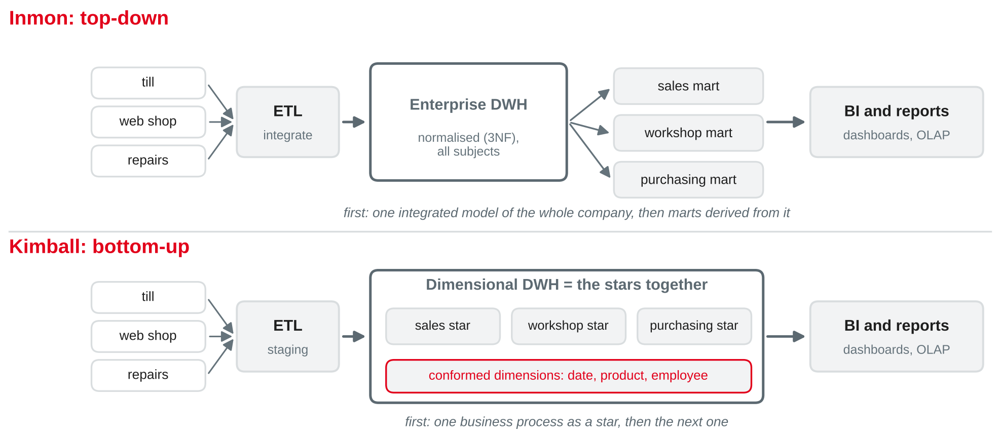
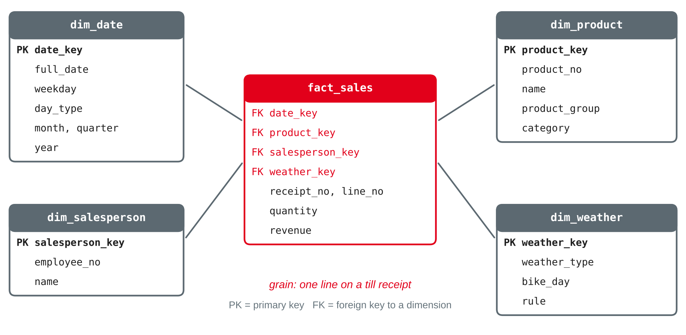
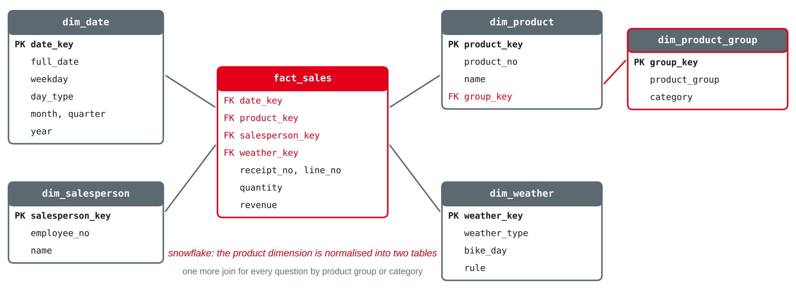
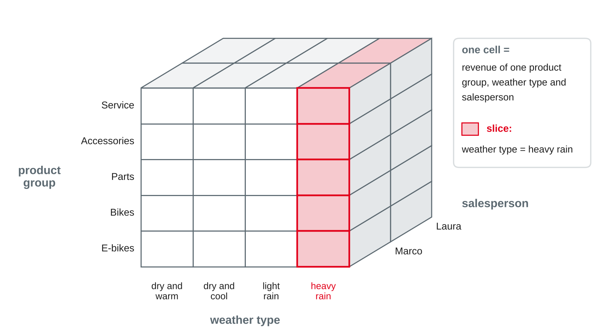

Data Management
DWH concepts · Inmon vs. Kimball · star and snowflake schema · fact and dimension tables · OLAP
DHBW · Digital Business Management (Business IT) · Semester 2
bikeshop.db — every day, idempotently, with a run logtill_daily and weather_daily gave a first answer — but only per day, only totalsYour preparation: if the shop wants revenue per day, per weather type and per product group, which tables would you build?
Session 16 of this course; Kimball and Ross (2013, Chapter 1).
| Source | Content | Becomes |
|---|---|---|
bikeshop-sales-session17.sql | new: the till's receipts and lines, 5–10 Oct 2026 | product, sale, sale_line |
weather_daily (session 16) | daily weather, Mannheim | weather type per day |
employee, salesperson (session 7) | the shop's staff | who sold it |
bikeshop-star-session17.sql | new: the model star schema, for checking | fact_sales, dim_… |
Own example based on the bike shop case; till data fictional. Weather data: Deutscher Wetterdienst via de Maeyer (n.d.), CC BY 4.0.
Analysis apart from the operational systems
| Operational (OLTP) | Analytical (OLAP) | |
|---|---|---|
| Purpose | run the business | understand and steer it |
| Bike shop example | the till records receipt 1029 | revenue per product group on rainy days |
| Typical access | read or write a few rows | read and aggregate many rows |
| Data | current, detailed, changes all the time | history, integrated from many sources |
| Design | normalised (session 6): no anomalies | denormalised: simple, fast queries |
| Users | staff at the till, the workshop | owner, controlling, analysts |
Based on Chaudhuri and Dayal (1997) and Kimball and Ross (2013, Chapter 1).
A data warehouse is a subject-oriented, integrated, nonvolatile and time-variant collection of data in support of management's decisions (Inmon, 2005).
| Property | Meaning | Bike shop |
|---|---|---|
| Subject-oriented | organised by business subjects, not by applications | sales, repairs, purchasing — not "till app tables" |
| Integrated | one format, one key, one meaning across sources | one product number, one date format, one station |
| Nonvolatile | loaded and read, not changed by daily work | a receipt line stays as it was sold |
| Time-variant | keeps history, every row belongs to a point in time | sales of every day since the start |
Inmon (2005, Chapter 2); DAMA International (2017, Chapter 11).
Two ways to build a data warehouse

Own illustration based on Inmon (2005), Kimball and Ross (2013, Chapter 1) and Serra (2024, Chapter 8).
| Inmon | Kimball | |
|---|---|---|
| Direction | top-down: enterprise model first | bottom-up: one business process first |
| Central layer | normalised enterprise DWH (3NF) | dimensional stars with conformed dimensions |
| Data marts | derived from the DWH | are the DWH |
| First results | later: big upfront design | sooner: one star delivers |
| Strength | one integrated, flexible core | easy to understand and query |
| Risk | long project before any report | stars that do not fit together if dimensions are not shared |
Based on Inmon (2005), Kimball and Ross (2013, Chapters 1 and 4) and Serra (2024, Chapter 8).
price is overwritten with today's prices2026-10-05, weather uses 05.10.2026, and the station is called MA in one table and Mannheim in the otherFacts, dimensions and the star schema
Facts
The measurements of a business process: numbers you add up or average. Bike shop: quantity, revenue of a receipt line.
Dimensions
The context of a fact: who, what, where, when, under which conditions. Bike shop: date, product, salesperson, weather.
weekday, product_group, bike_dayBased on Kimball and Ross (2013, Chapters 1–2).
| Step | Question | Bike shop till |
|---|---|---|
| 1 Business process | which activity do we measure? | selling at the till |
| 2 Grain | what is one row of the fact table? | one line on a receipt |
| 3 Dimensions | what describes each row? | date, product, salesperson, weather |
| 4 Facts | what do we measure per row? | quantity, revenue |
Based on Kimball and Ross (2013, Chapter 3).

Own illustration based on Kimball and Ross (2013, Chapters 1–3).
product_group and category repeat in every product row — on purposeproduct_key), independent of the till's product_noNULL foreign keys in the fact: an "unknown" row (weather_key 0) insteadBased on Kimball and Ross (2013, Chapters 2–3).
| Kind of fact | Can be summed … | Bike shop example |
|---|---|---|
| Additive | across all dimensions | quantity, revenue |
| Semi-additive | across some, not over time | bikes in stock at closing time |
| Non-additive | never — compute from additive parts | unit price, margin %, number of distinct receipts |
Based on Kimball and Ross (2013, Chapters 2 and 4).
The workshop wants a star for repair jobs (session 8 data: repair_job, repair_line, bike, customer, spare_part, job_mechanic).
quantity · price_charged × quantity · job_date · brand · qualification of the mechanic · customer city · list_price · name of the partprice_charged 0. Fact row or not?
Own illustration based on Kimball and Ross (2013, Chapter 3), Chaudhuri and Dayal (1997) and Elmasri and Navathe (2016, Chapter 29).
INSERT INTO fact_sales (date_key, product_key, salesperson_key, weather_key,
receipt_no, line_no, quantity, revenue)
SELECT CAST(strftime('%Y%m%d', s.sale_date) AS INTEGER), -- 20261005
p.product_key, sp.salesperson_key,
CASE WHEN w.day IS NULL THEN 0 -- unknown
WHEN w.rain_mm >= 5 THEN 4 WHEN w.rain_mm >= 1 THEN 3 -- heavy, light rain
WHEN w.t_max < 15 THEN 2 ELSE 1 END, -- dry and cool, warm
l.receipt_no, l.line_no, l.quantity, round(l.quantity * l.unit_price, 2)
FROM sale_line AS l
JOIN sale AS s ON s.receipt_no = l.receipt_no
JOIN dim_product AS p ON p.product_no = l.product_no -- surrogate key lookup
JOIN dim_salesperson AS sp ON sp.employee_no = s.employee_no
LEFT JOIN weather_daily AS w ON w.day = s.sale_date AND w.station = 'Mannheim';Own example; based on Kimball and Ross (2013, Chapters 3 and 19).
| Business process | Date | Product | Employee | Weather | Bike | Supplier |
|---|---|---|---|---|---|---|
| Till sales | ✓ | ✓ | ✓ | ✓ | ||
| Repairs | ✓ | ✓ (parts) | ✓ (mechanic) | ✓ | ||
| Purchasing | ✓ | ✓ (parts) | ✓ |
Based on Kimball and Ross (2013, Chapter 4).
The rain cape moves from Accessories to a new group Clothing on 1 November. What happens to October's report?
| Type | What the load does | October report afterwards |
|---|---|---|
| Type 1 | overwrite the attribute | shows Clothing — history rewritten |
| Type 2 | add a new row with a new surrogate key, valid from 1 Nov | shows Accessories — history kept |
Based on Kimball and Ross (2013, Chapter 2).
Questions in many dimensions

Own illustration based on Chaudhuri and Dayal (1997) and Elmasri and Navathe (2016, Chapter 29).
| Operation | What it does | Bike shop example |
|---|---|---|
| Roll-up | aggregate along a hierarchy, less detail | product → product group → category |
| Drill-down | the reverse, more detail | category Bikes → E-bikes, Bikes → models |
| Slice | fix one dimension to one value | only weather_type = 'heavy rain' |
| Dice | select a sub-cube on several dimensions | parts and accessories, Mon–Fri, all weather types |
| Pivot | rotate: swap rows and columns | product groups as rows, good/bad days as columns |
GROUP BY, slice and dice add WHERE, pivot turns values into columnsBased on Chaudhuri and Dayal (1997) and Elmasri and Navathe (2016, Chapter 29).
SELECT p.product_group,
round(sum(CASE WHEN w.bike_day = 'good' THEN f.revenue ELSE 0 END), 2) AS good_days,
round(sum(CASE WHEN w.bike_day = 'bad' THEN f.revenue ELSE 0 END), 2) AS bad_days,
round(sum(f.revenue), 2) AS total
FROM fact_sales AS f
JOIN dim_product AS p ON p.product_key = f.product_key
JOIN dim_weather AS w ON w.weather_key = f.weather_key
GROUP BY p.product_group
ORDER BY total DESC;| product_group | good_days | bad_days | total |
|---|---|---|---|
| E-bikes | 8,597.00 | 3,599.00 | 12,196.00 |
| Bikes | 299.00 | 3,996.00 | 4,295.00 |
| Accessories | 958.10 | 588.80 | 1,546.90 |
| Parts | 228.30 | 306.60 | 534.90 |
| Service | 294.00 | 0.00 | 294.00 |
Own example; based on Kimball and Ross (2013, Chapter 3).
A star schema makes questions easy to ask. It does not make the answers true: check the grain, the additivity and what else differs between the groups.
Own example (fictional till data); weather data: Deutscher Wetterdienst via de Maeyer (n.d.).
Load bikeshop-sales-session17.sql. Predict first, then run.
sale_line — does it match the till export of session 16?bikeshop-star-session17.sql. Compare it with your design. Why weather_key 0? Why product_key and not product_no?product_group and category into dim_product_group. What changes in your queries?Own example; till data fictional; weather data: Deutscher Wetterdienst via de Maeyer (n.d.), CC BY 4.0.
Milestone 5 (star schema): a star schema for your project case — business process, grain, dimension and fact tables with keys — and three analytical questions it answers.
GROUP BY, WHERE, CASEInmon (2005); Kimball and Ross (2013).
Preparation: finish the hands-on and worksheet 17; submit milestone 5. Think: the shop wants to keep photos of damaged bikes and the raw API responses for later. Would you put them into the star schema — and if not, where?